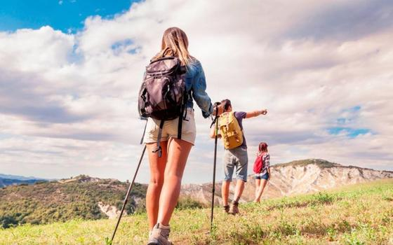
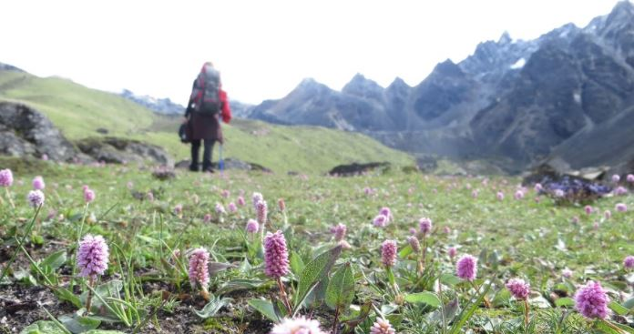

El trekking o excursionismo es una actividad física que consiste en caminar por escenarios naturales, como montañas, bosques, selvas, cañones o ríos.
Se diferencia del senderismo en que la modalidad del trekking requiere un mayor esfuerzo físico, ya que mientras el recorrido realizado en senderismo suele tener un grado de dificultad más bajo, debido a que sus rutas discurren por senderos, vías y caminos señalizados, en el excursionismo los recorridos se realizan a través de parajes aislados y sin ninguna ayuda de señales o caminos, lo que representa un mayor contacto con la naturaleza.
El senderismo suele estar considerado como una actividad más relajante, mientras que el excursionismo se asocia con una mayor demanda física.
Además de esta diferencia, el trekking se suele combinar con otras actividades naturales, como la acampada.
El trekking tiene una regla básica: no perturbar ni dañar la naturaleza.
Aunque la actividad depende del grado de dificultad del terreno, lo vital para practicarla es hacerse con el equipo adecuado:
Una brújula: Al ser una actividad que tiene como escenario parajes naturales no señalizados, es imprescindible utilizar una brújula para no perder la orientación.
Cuerdas: La mayoría de las rutas realizadas en el trekking son de montaña o se sitúan en terrenos escarpados y difíciles.En ese tipo de zonas una cuerda puede llegar a ser imprescindible.
Alimentos: Muchas de las rutas suelen durar varios días y conllevan un importante gasto de energía. Consumir alimentos ricos en vitaminas y proteínas otorgará la energía suficiente para completar las rutas con éxito.
Ropa cómoda y adecuada a la situación climatológica: Aunque el trekking no tiene una vestimenta determinada, es preciso disponer de la ropa adecuada a cada situación. Además, el calzado debe ser cómodo, ya que los recorridos son largos.
Otros utensilios y objetos: Una tienda de campaña por si es necesario hacer noche durante el recorrido, una cantimplora para poder hidratarse o una navaja se encuentran entre los objetos más necesarios a la hora de hacer excursionismo.
En la actualidad existen agrupaciones que fomentan esta actividad y tratan de establecer unas pautas. El objetivo principal de las normas es garantizar la seguridad de los excursionistas a la vez que se protege el medio ambiente y el patrimonio natural.
El trekking, como todas las actividades que impliquen caminar, aporta un gran beneficio para el sistema cardiovascular
Ayuda a quemar calorías en mayor grado que el senderismo al requerir un esfuerzo físico mayor.
Previene y disminuye los dolores musculares y el colesterol derivados de una forma de vida sedentaria.
Ayuda a mejorar notablemente la salud psíquica. El contacto directo con la naturaleza y la huida del estrés, así como de la contaminación, el ruido y la polución de las ciudades, incrementa el bienestar y la satisfacción.